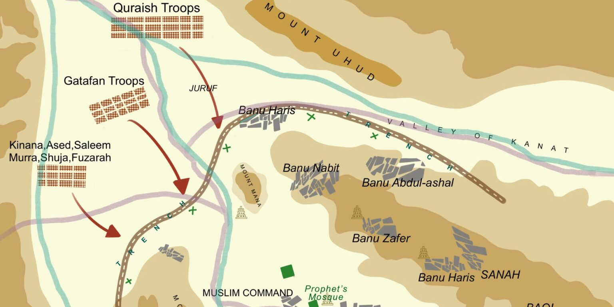
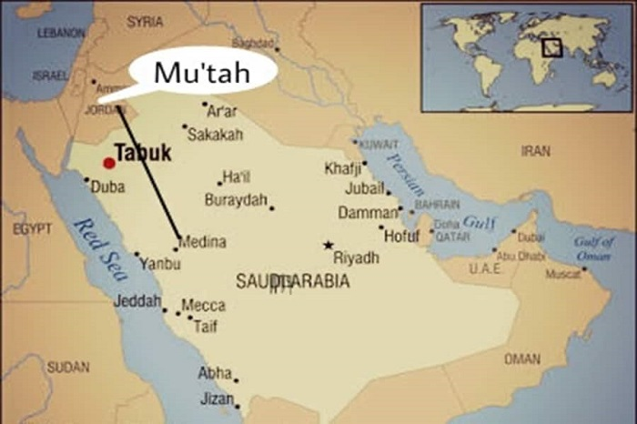
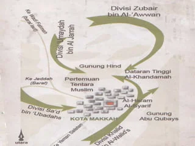
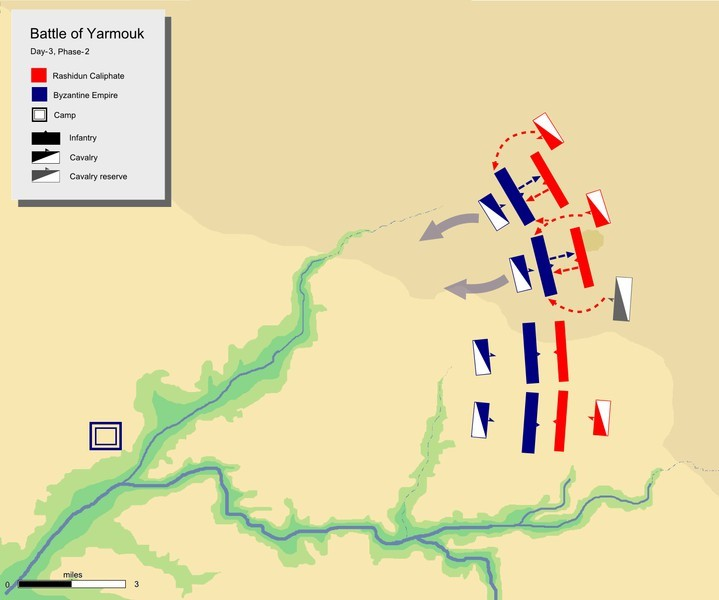
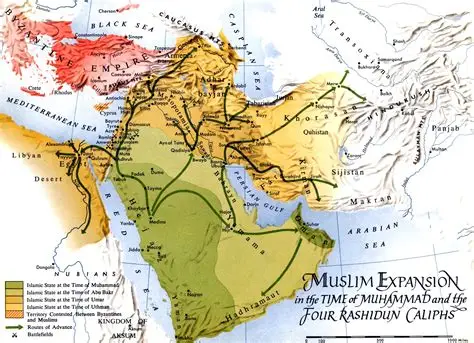
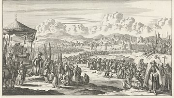

1. Perang Badar (624 M)

Perang Badar terjadi pada 17 Ramadhan tahun 2 Hijriyah antara kaum Muslimin dan kaum Quraisy Mekkah. Pasukan Muslim berjumlah sekitar 313 orang, sedangkan pasukan Quraisy sekitar 1000 orang dengan perlengkapan jauh lebih lengkap.
Dengan strategi penguasaan sumber air dan kedisiplinan pasukan, kaum Muslimin berhasil meraih kemenangan besar. Peristiwa ini memperkuat kedudukan umat Islam di Madinah dan menjadi tonggak penting dalam sejarah perjuangan Islam.
2. Perang Uhud (625 M)

Perang Uhud terjadi setahun setelah Perang Badar sebagai balasan kaum Quraisy. Pasukan Quraisy berjumlah sekitar 3000 orang, sementara kaum Muslim sekitar 700 orang.
Pada awalnya kaum Muslim unggul, namun karena sebagian pemanah meninggalkan posisi, pasukan Quraisy berhasil menyerang balik. Peristiwa ini menjadi pelajaran penting tentang ketaatan dan disiplin.
3. Perang Khandaq/Ahzab (627 M)
Perang Khandaq atau Ahzab terjadi ketika koalisi besar Quraisy menyerang Madinah. Atas usulan Salman Al-Farisi, kaum Muslim menggali parit sebagai pertahanan.
Strategi ini membuat musuh tidak dapat menembus kota. Akhirnya pasukan koalisi mundur karena cuaca buruk dan perpecahan internal.
4. Perang Mu'tah (629 M)
Perang Mu'tah terjadi antara 3000 pasukan Muslim melawan tentara Bizantium yang jauh lebih besar. Pertempuran ini terjadi di wilayah Syam.
Beberapa panglima Muslim gugur, namun strategi Khalid bin Walid memungkinkan pasukan Muslim mundur dengan terhormat dan tetap menjaga kekuatan.
5. Fathu Makkah (630 M)
Fathu Makkah adalah penaklukan kota Makkah oleh kaum Muslim dengan sekitar 10.000 pasukan. Peristiwa ini berlangsung hampir tanpa pertempuran besar.
Nabi Muhammad SAW memberikan pengampunan umum kepada penduduk Makkah. Peristiwa ini menandai bersatunya Jazirah Arab di bawah Islam.
6. Perang Hunain (630 M)

Perang Hunain terjadi melawan suku Hawazin dan Tsaqif setelah Fathu Makkah. Pasukan Muslim sempat terdesak karena serangan mendadak.
Namun dengan keteguhan dan kepemimpinan Nabi, kaum Muslim bangkit dan memenangkan pertempuran tersebut.
7. Perang Yarmuk (636 M)
Perang Yarmuk terjadi antara pasukan Muslim dan Bizantium di wilayah Syam. Dipimpin oleh Khalid bin Walid.
Kemenangan ini membuka jalan bagi penyebaran Islam di Suriah dan melemahkan kekuasaan Bizantium.
8. Perang Qadisiyah (636 M)
Pertempuran besar antara pasukan Muslim dan Kekaisaran Persia Sassaniyah. Pertempuran berlangsung sengit beberapa hari.
Kemenangan ini menyebabkan runtuhnya kekuasaan Persia di Irak dan memperluas wilayah Islam.
9. Perang Hittin (1187 M)
Perang Hittin dipimpin oleh Salahuddin Al-Ayyubi melawan Tentara Salib. Pertempuran terjadi di dekat Danau Tiberias.
Kemenangan ini membuka jalan bagi pembebasan Yerusalem dan menjadi titik penting dalam sejarah Perang Salib.
10. Penaklukan Konstantinopel (1453 M)

Penaklukan Konstantinopel dipimpin oleh Sultan Mehmed II dari Kesultanan Utsmaniyah. Kota ini memiliki pertahanan yang sangat kuat.
Dengan strategi pengepungan dan penggunaan meriam besar, Konstantinopel berhasil ditaklukkan dan mengakhiri Kekaisaran Bizantium.